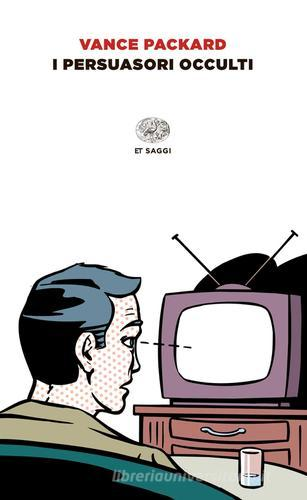
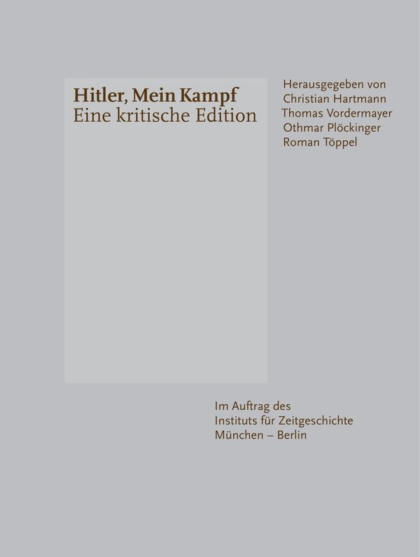
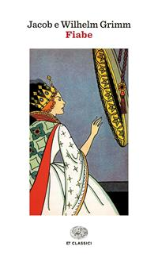

33:09 · 5 OPERE
La necessità dell'acculturazione in Europa.
Il filo del discorso
Durante una passeggiata, Caldarella collega la critica dell’informazione alla proposta di rafforzare l’insegnamento della storia delle religioni in Europa. Il ricordo personale di un servizio televisivo introduce la sua sfiducia nella rappresentazione mediatica degli eventi. Il discorso si concentra poi sul conflitto israelo-palestinese, sulle manifestazioni negli Stati Uniti, sul linguaggio di Trump e sui conteggi delle vittime. Il relatore accusa una parte dei media e dei manifestanti di sostenere narrazioni ostili a Israele; queste accuse e le sue generalizzazioni sono riportate come giudizi personali. La seconda parte presenta la pubblicazione di video sul canale come esperienza di contrasto alla disinformazione e ne ricava una proposta educativa contro il radicalismo religioso. Caldarella dichiara di voler tutelare la libertà di credere, distinguendola dall’imposizione di una fede ad altri. La conclusione usa confronti con il mormonismo e con Hänsel e Gretel per insistere sulla differenza fra racconto, credenza e ricostruzione storica. La scheda separa tale proposta dai suoi presupposti non dimostrati: il cambiamento dei commenti sul canale non è una prova dell’efficacia generale di un programma educativo e la religione di una persona non ne determina automaticamente idee o comportamenti politici.
I libri nel discorso

I persuasori occulti
Copertina: Einaudi · ET Saggi · 2015 · traduzione di Carlo Fruttero
Immagine autentica dell’opera, controllata visivamente; l’edizione di riferimento non è attribuita al filmato.
Vance Packard, The Hidden Persuaders / I persuasori occulti; titolo esplicito, nomi deformati dall’ASR.
Passaggio 1:20 ↗ · Fonti e libro ↗
Mein Kampf
Copertina: Hitler, Mein Kampf. Eine kritische Edition, Institut für Zeitgeschichte, 2016, due volumi, a cura di Christian Hartmann, Thomas Vordermayer, Othmar Plöckinger e Roman Töppel; ISBN 9783981405231.
Immagine autentica della copertina grigia dell’edizione critica dell’Institut für Zeitgeschichte. Si tratta di un’opera in due volumi: l’immagine piana di copertina non è dichiarata fotografia completa dei due volumi né edizione originale nazista. La ristampa precisa illustrata non è attribuita dal solo ISBN.
Mein Kampf, richiamo al lessico della propaganda nazista senza un passo o lemma tedesco localizzato.
Passaggio 9:10 ↗ · Fonti e libro ↗
Costituzione della Repubblica Italiana
Copertina dell’edizione Intra aggiornata al 2023: Intra · 2023 · introduzione di Umberto Vincenti
Copertina autentica del testo integrale, aggiornata alla legge costituzionale 26 settembre 2023 n.1. È successiva al filmato del 2019 e non rappresenta la versione storica letta dal relatore. Umberto Vincenti firma l’introduzione. I tentativi di acquisire PDF istituzionali hanno restituito HTTP 403: nessun PDF o frontespizio è simulato come scaricato.
Articolo primo della Costituzione, richiamo polemico alla preparazione degli opinionisti.
Passaggio 27:17 ↗ · Fonti e libro ↗Libro di Mormon
Identificazione probabile
Copertina: Church Distribution · edizione italiana di riferimento
Copertina reale di riferimento; l’edizione non è identificata come quella citata nel video.
Richiami alla visita di Gesù nelle Americhe e alle imbarcazioni: confronto probabile con 3 Nefi 11 ed Ether 2 e 6; titolo del libro non pronunciato.
Passaggio 29:25 ↗ · Fonti e libro ↗
Hänsel e Gretel
Copertina della raccolta: COPERTINA DELLA RACCOLTA Fiabe, Jacob e Wilhelm Grimm, Einaudi, ET Classici, 2015, ISBN 9788806226329, traduzione di Clara Bovero e prefazione di Giuseppe Cocchiara. Il catalogo bibliotecario descrive XVII, 652 pagine; quello commerciale indica 656, conteggi non uniformati. Copertina intera bianca con illustrazione di una regina allo specchio; rappresenta l’intera raccolta, non una scena di Hänsel e Gretel. Nessun adattamento di Stephen King o Anthony Browne attribuito ai Grimm.
Raccolta integrale che contiene Hänsel e Gretel, KHM 15. L’illustrazione esterna riguarda un’altra fiaba della stessa raccolta e non è presentata come raffigurazione dei due bambini. Edizione non identificata nel filmato.
Hänsel e Gretel, strega e casa di dolci: uso di paragone, non lettura della fiaba.
Passaggio 30:55 ↗ · Fonti e libro ↗Minutaggi ricavati da testi automatici, da riascoltare. Le identificazioni probabili sono segnalate accanto ai libri.